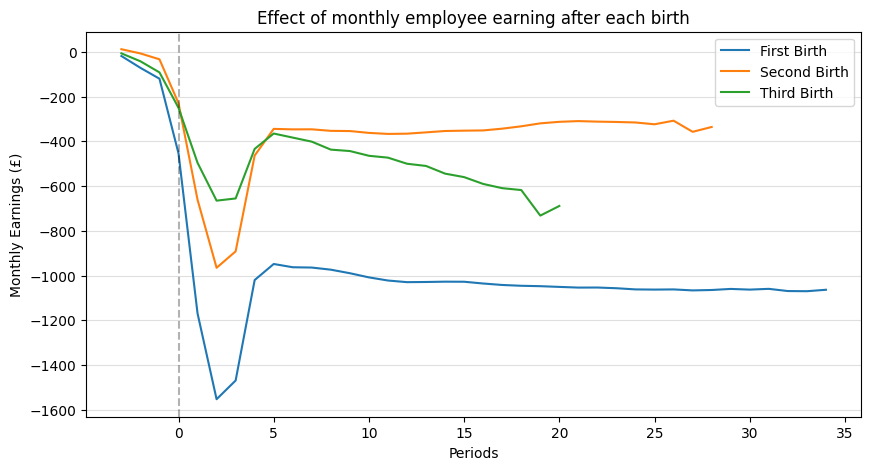

import pandas as pd
import matplotlib as plt#Since this is excel use pd.read_excel
df_mother_earnings = pd.read_excel('datasetimpactmotherhood.xlsx',sheet_name= 'Table 3', skiprows=7)
'''
Skip the first 5 rows as it does not contain data
from the sheet name 'Men' on excel, this will create a dataframe with all info for men, same thing for women
'''
df_mother_earnings.head(10)| Births | Time since birth \n(quarters) | Estimate of birth \n(£) | Standard error \n(£) | P-value | Lower confidence limit \n(£) | Upper confidence limit \n(£) | Relative reduction in earnings compared to reference point (%) | |
|---|---|---|---|---|---|---|---|---|
| 0 | First birth | -3 | -18.13 | 1.43 | <0.001 | -20.94 | -15.32 | 0.7 |
| 1 | First birth | -2 | -71.15 | 1.78 | <0.001 | -74.65 | -67.66 | 2.8 |
| 2 | First birth | -1 | -119.74 | 2.01 | <0.001 | -123.68 | -115.81 | 4.8 |
| 3 | First birth | 0 | -453.65 | 2.30 | <0.001 | -458.16 | -449.14 | 18.1 |
| 4 | First birth | 1 | -1169.64 | 2.90 | <0.001 | -1175.33 | -1163.95 | 46.7 |
| 5 | First birth | 2 | -1553.26 | 3.42 | <0.001 | -1559.97 | -1546.55 | 62.1 |
| 6 | First birth | 3 | -1469.58 | 3.71 | <0.001 | -1476.84 | -1462.31 | 58.7 |
| 7 | First birth | 4 | -1020.18 | 3.37 | <0.001 | -1026.78 | -1013.58 | 40.8 |
| 8 | First birth | 5 | -948.40 | 3.55 | <0.001 | -955.36 | -941.44 | 37.9 |
| 9 | First birth | 6 | -962.99 | 3.77 | <0.001 | -970.38 | -955.60 | 38.5 |
df_mother_earnings.iloc[60:80]
#check how often then births changes| Births | Time since birth \n(quarters) | Estimate of birth \n(£) | Standard error \n(£) | P-value | Lower confidence limit \n(£) | Upper confidence limit \n(£) | Relative reduction in earnings compared to reference point (%) | |
|---|---|---|---|---|---|---|---|---|
| 60 | Second birth | 19 | -319.37 | 11.91 | <0.001 | -342.71 | -296.03 | 16.4 |
| 61 | Second birth | 20 | -312.54 | 12.81 | <0.001 | -337.64 | -287.43 | 16.1 |
| 62 | Second birth | 21 | -309.30 | 13.90 | <0.001 | -336.54 | -282.06 | 15.9 |
| 63 | Second birth | 22 | -311.69 | 15.14 | <0.001 | -341.37 | -282.01 | 16.1 |
| 64 | Second birth | 23 | -313.19 | 16.83 | <0.001 | -346.17 | -280.22 | 16.1 |
| 65 | Second birth | 24 | -315.49 | 18.87 | <0.001 | -352.47 | -278.50 | 16.2 |
| 66 | Second birth | 25 | -323.56 | 21.23 | <0.001 | -365.17 | -281.95 | 16.7 |
| 67 | Second birth | 26 | -307.46 | 24.88 | <0.001 | -356.23 | -258.69 | 15.8 |
| 68 | Second birth | 27 | -357.19 | 29.85 | <0.001 | -415.70 | -298.68 | 18.4 |
| 69 | Second birth | 28 | -335.63 | 38.67 | <0.001 | -411.42 | -259.83 | 17.3 |
| 70 | Third birth | -3 | -6.36 | 4.78 | 0.183 | -15.72 | 3.00 | 0.3 |
| 71 | Third birth | -2 | -41.78 | 6.30 | <0.001 | -54.13 | -29.44 | 2.2 |
| 72 | Third birth | -1 | -91.49 | 7.09 | <0.001 | -105.40 | -77.59 | 4.8 |
| 73 | Third birth | 0 | -249.85 | 7.46 | <0.001 | -264.46 | -235.24 | 13.0 |
| 74 | Third birth | 1 | -495.88 | 8.30 | <0.001 | -512.14 | -479.62 | 25.8 |
| 75 | Third birth | 2 | -665.11 | 9.99 | <0.001 | -684.69 | -645.52 | 34.6 |
| 76 | Third birth | 3 | -655.30 | 11.11 | <0.001 | -677.06 | -633.53 | 34.1 |
| 77 | Third birth | 4 | -433.55 | 10.41 | <0.001 | -453.96 | -413.14 | 22.6 |
| 78 | Third birth | 5 | -364.93 | 11.67 | <0.001 | -387.81 | -342.06 | 19.0 |
| 79 | Third birth | 6 | -383.12 | 12.86 | <0.001 | -408.32 | -357.91 | 19.9 |
'''
we can see that the data is seperated into 3 sections: First birth, secound birth and third birth.
We should see for any duplicates,null values
''''\nwe can see that the data is seperated into 3 sections: First birth, secound birth and third birth.\nWe should see for any duplicates,null values\n\n'#drop any null values
df_mother_earnings = df_mother_earnings.dropna()
print(df_mother_earnings.count())Births 94
Time since birth \n(quarters) 94
Estimate of birth \n(£) 94
Standard error \n(£) 94
P-value 94
Lower confidence limit \n(£) 94
Upper confidence limit \n(£) 94
Relative reduction in earnings compared to reference point (%) 94
dtype: int64
print(len(df_mother_earnings))
#this will confirm that is equal to count(), then there are no missing values94#check for duplicates
df_mother_earnings.duplicated().sum()np.int64(0)#check the count
print(df_mother_earnings.count())Births 94
Time since birth \n(quarters) 94
Estimate of birth \n(£) 94
Standard error \n(£) 94
P-value 94
Lower confidence limit \n(£) 94
Upper confidence limit \n(£) 94
Relative reduction in earnings compared to reference point (%) 94
dtype: int64#check the type of data used for each columns
df_mother_earnings.info()
#the data is all over the place due to line breaks
#since we are not using the p-value and it is counted as an object, can simply drop from data
df_mother_earnings = df_mother_earnings.drop(columns=['P-value'])<class 'pandas.core.frame.DataFrame'>
RangeIndex: 94 entries, 0 to 93
Data columns (total 8 columns):
# Column Non-Null Count Dtype
--- ------ -------------- -----
0 Births 94 non-null object
1 Time since birth
(quarters) 94 non-null int64
2 Estimate of birth
(£) 94 non-null float64
3 Standard error
(£) 94 non-null float64
4 P-value 94 non-null object
5 Lower confidence limit
(£) 94 non-null float64
6 Upper confidence limit
(£) 94 non-null float64
7 Relative reduction in earnings compared to reference point (%) 94 non-null float64
dtypes: float64(5), int64(1), object(2)
memory usage: 6.0+ KB#check for any random variables using describe
df_mother_earnings.describe()
#all values look good, so now we can analyse| Time since birth \n(quarters) | Estimate of birth \n(£) | Standard error \n(£) | Lower confidence limit \n(£) | Upper confidence limit \n(£) | Relative reduction in earnings compared to reference point (%) | |
|---|---|---|---|---|---|---|
| count | 94.000000 | 94.000000 | 94.000000 | 94.000000 | 94.000000 | 94.000000 |
| mean | 12.691489 | -630.655957 | 11.328085 | -652.857766 | -608.453191 | 28.008511 |
| std | 9.929890 | 375.612519 | 10.109094 | 374.098830 | 378.159070 | 14.244785 |
| min | -3.000000 | -1553.260000 | 1.430000 | -1559.970000 | -1546.550000 | 0.300000 |
| 25% | 4.250000 | -1028.625000 | 4.890000 | -1039.472500 | -1017.820000 | 17.800000 |
| 50% | 12.000000 | -504.975000 | 7.985000 | -546.460000 | -472.825000 | 26.250000 |
| 75% | 20.000000 | -346.102500 | 13.632500 | -364.645000 | -332.647500 | 41.325000 |
| max | 34.000000 | 12.180000 | 56.680000 | 8.040000 | 16.320000 | 62.100000 |
print('sum of null values')
print(df_mother_earnings.isnull().sum())
print('')
#check for missing data
print(df_mother_earnings.isna().sum())
#all show 0 so this is goodsum of null values
Births 0
Time since birth \n(quarters) 0
Estimate of birth \n(£) 0
Standard error \n(£) 0
Lower confidence limit \n(£) 0
Upper confidence limit \n(£) 0
Relative reduction in earnings compared to reference point (%) 0
dtype: int64
Births 0
Time since birth \n(quarters) 0
Estimate of birth \n(£) 0
Standard error \n(£) 0
Lower confidence limit \n(£) 0
Upper confidence limit \n(£) 0
Relative reduction in earnings compared to reference point (%) 0
dtype: int64#check for duplicates
print(df_mother_earnings.duplicated())0 False
1 False
2 False
3 False
4 False
...
89 False
90 False
91 False
92 False
93 False
Length: 94, dtype: bool'''
Data is cleaned, and there are no null values or duplicate rows, time for analysis
the main point is to see how having a a mothers earning fall before and after having a kid, we will see between 1st,2nd and 3rd child
''''\nData is cleaned, and there are no null values or duplicate rows, time for analysis\n\nthe main point is to see how having a a mothers earning fall before and after having a kid, we will see between 1st,2nd and 3rd child\n'df_mother_earnings.columns
#check columns namesIndex(['Births', 'Time since birth \n(quarters)', 'Estimate of birth \n(£)',
'Standard error \n(£)', 'Lower confidence limit \n(£)',
'Upper confidence limit \n(£)',
'Relative reduction in earnings compared to reference point (%)'],
dtype='object')#save the data
df_mother_earnings.to_csv('clean_data_motherhood.csv', index=False)ANALYSIS OF DATA
df_mother_earnings =df_mother_earnings[['Births','Time since birth \n(quarters)','Estimate of birth \n(£)']]
df_mother_earnings = df_mother_earnings.rename(columns={'Time since birth \n(quarters)' : 'Time since birth'})
df_mother_earnings = df_mother_earnings.rename(columns={'Estimate of birth \n(£)' : 'Earnings'})
df_mother_earnings.head(10)| Births | Time since birth | Earnings | |
|---|---|---|---|
| 0 | First birth | -3 | -18.13 |
| 1 | First birth | -2 | -71.15 |
| 2 | First birth | -1 | -119.74 |
| 3 | First birth | 0 | -453.65 |
| 4 | First birth | 1 | -1169.64 |
| 5 | First birth | 2 | -1553.26 |
| 6 | First birth | 3 | -1469.58 |
| 7 | First birth | 4 | -1020.18 |
| 8 | First birth | 5 | -948.40 |
| 9 | First birth | 6 | -962.99 |
# split into 3 seperate data frames so it is easier to plot
df_first = df_mother_earnings[df_mother_earnings['Births'] =='First birth']
df_second = df_mother_earnings[df_mother_earnings ['Births'] == 'Second birth']
df_third = df_mother_earnings[df_mother_earnings ['Births'] == 'Third birth']
df_first| Births | Time since birth | Earnings | |
|---|---|---|---|
| 0 | First birth | -3 | -18.13 |
| 1 | First birth | -2 | -71.15 |
| 2 | First birth | -1 | -119.74 |
| 3 | First birth | 0 | -453.65 |
| 4 | First birth | 1 | -1169.64 |
| 5 | First birth | 2 | -1553.26 |
| 6 | First birth | 3 | -1469.58 |
| 7 | First birth | 4 | -1020.18 |
| 8 | First birth | 5 | -948.40 |
| 9 | First birth | 6 | -962.99 |
| 10 | First birth | 7 | -964.36 |
| 11 | First birth | 8 | -973.85 |
| 12 | First birth | 9 | -989.69 |
| 13 | First birth | 10 | -1008.33 |
| 14 | First birth | 11 | -1022.36 |
| 15 | First birth | 12 | -1029.66 |
| 16 | First birth | 13 | -1028.90 |
| 17 | First birth | 14 | -1027.49 |
| 18 | First birth | 15 | -1027.80 |
| 19 | First birth | 16 | -1035.72 |
| 20 | First birth | 17 | -1042.24 |
| 21 | First birth | 18 | -1045.87 |
| 22 | First birth | 19 | -1047.66 |
| 23 | First birth | 20 | -1050.88 |
| 24 | First birth | 21 | -1053.95 |
| 25 | First birth | 22 | -1053.68 |
| 26 | First birth | 23 | -1056.83 |
| 27 | First birth | 24 | -1062.09 |
| 28 | First birth | 25 | -1062.91 |
| 29 | First birth | 26 | -1062.14 |
| 30 | First birth | 27 | -1066.55 |
| 31 | First birth | 28 | -1064.74 |
| 32 | First birth | 29 | -1059.94 |
| 33 | First birth | 30 | -1063.00 |
| 34 | First birth | 31 | -1059.60 |
| 35 | First birth | 32 | -1069.43 |
| 36 | First birth | 33 | -1070.16 |
| 37 | First birth | 34 | -1063.72 |
from matplotlib import colors
import matplotlib.pyplot as plt
plt.figure(figsize=(10,5))
plt.plot(df_first['Time since birth'], df_first['Earnings'], label ='First Birth')
plt.plot(df_second['Time since birth'],df_second['Earnings'], label = 'Second Birth')
plt.plot(df_third['Time since birth'], df_third['Earnings'], label = 'Third Birth')
plt.title('Effect of monthly employee earning after each birth')
plt.xlabel('Periods')
plt.ylabel('Monthly Earnings (£)')
plt.legend()
plt.axvline(0,color ='black', linestyle = '--', alpha = 0.3)
plt.grid(axis ='y', alpha = 0.4)
plt.show()
#see the min points and when they occus
import numpy as np
df_first['Earnings'].min()
import numpy as np
print('Min value of earning in the first born')
print(df_first.iloc[np.argmin(df_first['Earnings'])])
print('')
print('Min value of earning in the second born')
print(df_second.iloc[np.argmin(df_second['Earnings'])])
print('')
print('Min value of earning in the third born')
print(df_third.iloc[np.argmin(df_third['Earnings'])])
print('')Min value of earning in the first born
Births First birth
Time since birth 2
Earnings -1553.26
Name: 5, dtype: object
Min value of earning in the second born
Births Second birth
Time since birth 2
Earnings -965.39
Name: 43, dtype: object
Min value of earning in the third born
Births Third birth
Time since birth 19
Earnings -731.98
Name: 92, dtype: object